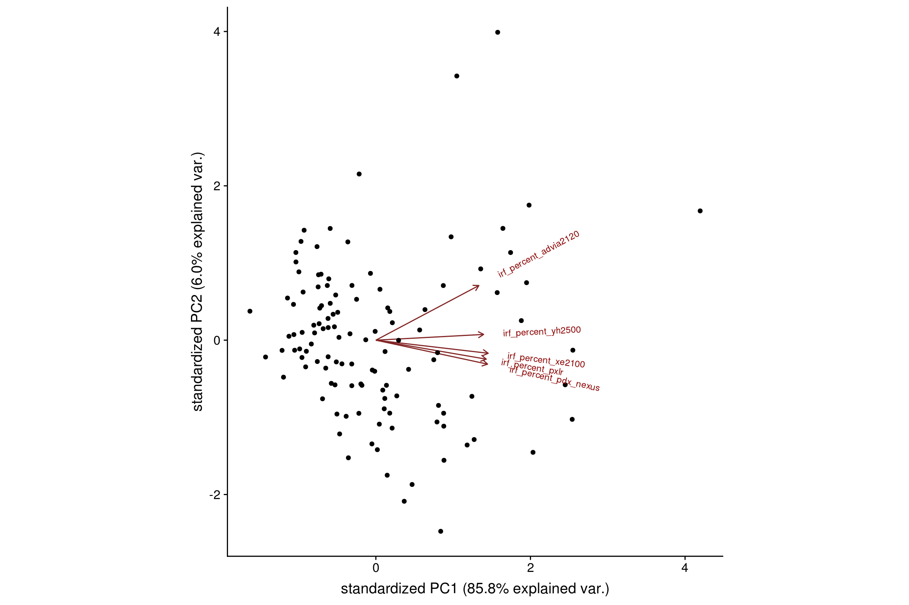
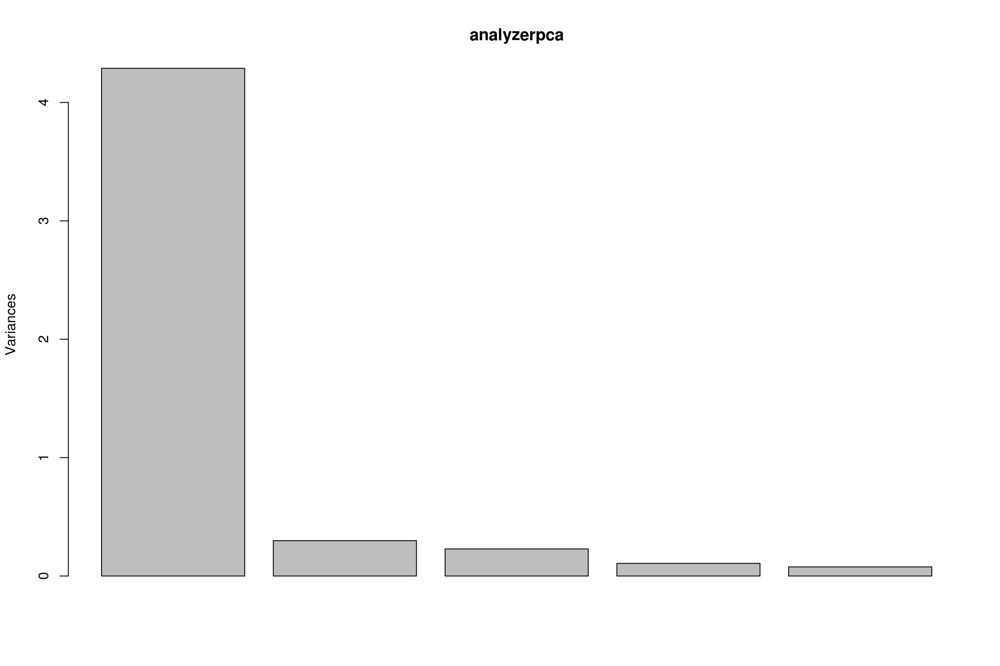
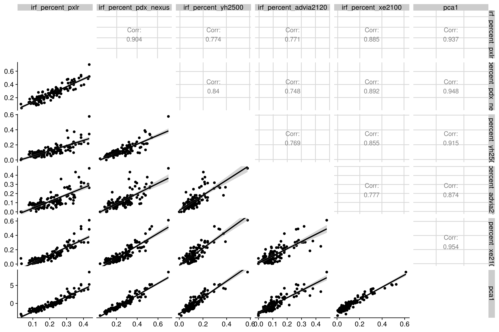

Last updated: 2019-04-03
workflowr checks: (Click a bullet for more information) ✖ R Markdown file: uncommitted changes
The R Markdown is untracked by Git. To know which version of the R Markdown file created these results, you’ll want to first commit it to the Git repo. If you’re still working on the analysis, you can ignore this warning. When you’re finished, you can run wflow_publish to commit the R Markdown file and build the HTML.
✔ Environment: empty
Great job! The global environment was empty. Objects defined in the global environment can affect the analysis in your R Markdown file in unknown ways. For reproduciblity it’s best to always run the code in an empty environment.
✔ Seed:
set.seed(20180830)
The command set.seed(20180830) was run prior to running the code in the R Markdown file. Setting a seed ensures that any results that rely on randomness, e.g. subsampling or permutations, are reproducible.
✔ Session information: recorded
Great job! Recording the operating system, R version, and package versions is critical for reproducibility.
✔ Repository version: 2b4cad7
wflow_publish or wflow_git_commit). workflowr only checks the R Markdown file, but you know if there are other scripts or data files that it depends on. Below is the status of the Git repository when the results were generated:
Ignored files:
Ignored: .Rhistory
Ignored: .Rproj.user/
Ignored: analysis/figure/
Ignored: data/4-17-18/
Ignored: data/4-25-18/
Ignored: data/5-17-18/
Ignored: data/5-3-18/
Ignored: data/5-30-18/
Ignored: data/5-8-18/
Ignored: data/6-14-18/
Ignored: data/7-10-18/
Ignored: data/7-3-18/
Ignored: data/8-1-18/
Ignored: library/
Ignored: prepped_data/horiba.Rdata
Untracked files:
Untracked: analysis/pca.Rmd
Untracked: docs/figure/pca.Rmd/
Untracked: functions/base_plots.R
Untracked: output/demsdf.Rdata
Untracked: plots/
Unstaged changes:
Modified: analysis/horiba_data.Rmd
Modified: analysis/load_transform_horiba.Rmd
Modified: analysis/xn_8600.Rmd
Modified: analysis/xn_sapphire.Rmd
Modified: prepped_data/chop.Rdata
knitr::opts_chunk$set(echo = TRUE)
source("~/icsh_irf/functions/funs.R")
load_libs()load(here("prepped_data","horiba.Rdata"))mydf<-mydatamydf <- mydf %>%
select(contains("irf"))Note that there are 120 samples, each were measured in triplicate and those raw values averaged to the results you see here. There are 5 analyzers in this dataset, all were located in the same laboratory.
DT::datatable(mydf)2 rows with NA’s are removed. Data is centered and scaled.
analyzerpca<- prcomp(~ ., data = mydf, center = TRUE, scale = TRUE)summary(analyzerpca)Importance of components:
PC1 PC2 PC3 PC4 PC5
Standard deviation 2.0710 0.54623 0.47832 0.32660 0.27761
Proportion of Variance 0.8578 0.05967 0.04576 0.02133 0.01541
Cumulative Proportion 0.8578 0.91749 0.96325 0.98459 1.00000library(ggbiplot)
ggbiplot(analyzerpca)
plot(analyzerpca)
pcadf<-mydf %>%
tidyr::drop_na() %>%
mutate(pca1=analyzerpca[["x"]][,1])ggpairs(pcadf,progress = FALSE,diag = NULL,lower = list(
continuous = "smooth"))
pca_LM<- pcadf %>%
mutate(rownum = row_number(pca1)) %>%
gather(key = "key", value = "value",-pca1,-rownum) %>%
select(-rownum) %>%
group_by(key) %>%
nest() %>%
mutate(ols_regression = map(data, ~summary(lm(pca1~value, data=.x))))names(pca_LM$ols_regression)<-pca_LM$key
pca_LM$ols_regression$irf_percent_pxlr
Call:
lm(formula = pca1 ~ value, data = .x)
Residuals:
Min 1Q Median 3Q Max
-1.1740 -0.5026 -0.0990 0.3681 4.0338
Coefficients:
Estimate Std. Error t value Pr(>|t|)
(Intercept) -4.3745 0.1651 -26.49 <2e-16 ***
value 20.8073 0.7184 28.96 <2e-16 ***
---
Signif. codes: 0 '***' 0.001 '**' 0.01 '*' 0.05 '.' 0.1 ' ' 1
Residual standard error: 0.725 on 116 degrees of freedom
Multiple R-squared: 0.8785, Adjusted R-squared: 0.8775
F-statistic: 838.9 on 1 and 116 DF, p-value: < 2.2e-16
$irf_percent_pdx_nexus
Call:
lm(formula = pca1 ~ value, data = .x)
Residuals:
Min 1Q Median 3Q Max
-1.88866 -0.41640 0.03491 0.33963 2.15080
Coefficients:
Estimate Std. Error t value Pr(>|t|)
(Intercept) -4.3146 0.1470 -29.36 <2e-16 ***
value 16.4481 0.5102 32.24 <2e-16 ***
---
Signif. codes: 0 '***' 0.001 '**' 0.01 '*' 0.05 '.' 0.1 ' ' 1
Residual standard error: 0.6591 on 116 degrees of freedom
Multiple R-squared: 0.8996, Adjusted R-squared: 0.8987
F-statistic: 1039 on 1 and 116 DF, p-value: < 2.2e-16
$irf_percent_yh2500
Call:
lm(formula = pca1 ~ value, data = .x)
Residuals:
Min 1Q Median 3Q Max
-1.9061 -0.5853 -0.1905 0.5165 2.3904
Coefficients:
Estimate Std. Error t value Pr(>|t|)
(Intercept) -2.905 0.142 -20.46 <2e-16 ***
value 22.689 0.930 24.40 <2e-16 ***
---
Signif. codes: 0 '***' 0.001 '**' 0.01 '*' 0.05 '.' 0.1 ' ' 1
Residual standard error: 0.84 on 116 degrees of freedom
Multiple R-squared: 0.8369, Adjusted R-squared: 0.8355
F-statistic: 595.2 on 1 and 116 DF, p-value: < 2.2e-16
$irf_percent_advia2120
Call:
lm(formula = pca1 ~ value, data = .x)
Residuals:
Min 1Q Median 3Q Max
-3.0371 -0.5672 -0.1407 0.5702 3.0210
Coefficients:
Estimate Std. Error t value Pr(>|t|)
(Intercept) -2.4475 0.1566 -15.63 <2e-16 ***
value 20.1490 1.0378 19.42 <2e-16 ***
---
Signif. codes: 0 '***' 0.001 '**' 0.01 '*' 0.05 '.' 0.1 ' ' 1
Residual standard error: 1.009 on 116 degrees of freedom
Multiple R-squared: 0.7647, Adjusted R-squared: 0.7627
F-statistic: 377 on 1 and 116 DF, p-value: < 2.2e-16
$irf_percent_xe2100
Call:
lm(formula = pca1 ~ value, data = .x)
Residuals:
Min 1Q Median 3Q Max
-2.0042 -0.4271 -0.0237 0.3955 1.3551
Coefficients:
Estimate Std. Error t value Pr(>|t|)
(Intercept) -2.29628 0.08859 -25.92 <2e-16 ***
value 17.02521 0.49888 34.13 <2e-16 ***
---
Signif. codes: 0 '***' 0.001 '**' 0.01 '*' 0.05 '.' 0.1 ' ' 1
Residual standard error: 0.626 on 116 degrees of freedom
Multiple R-squared: 0.9094, Adjusted R-squared: 0.9086
F-statistic: 1165 on 1 and 116 DF, p-value: < 2.2e-16R version 3.5.1 (2018-07-02)
Platform: x86_64-redhat-linux-gnu (64-bit)
Running under: Red Hat Enterprise Linux
Matrix products: default
BLAS/LAPACK: /usr/lib64/R/lib/libRblas.so
locale:
[1] LC_CTYPE=en_US.UTF-8 LC_NUMERIC=C
[3] LC_TIME=en_US.UTF-8 LC_COLLATE=en_US.UTF-8
[5] LC_MONETARY=en_US.UTF-8 LC_MESSAGES=en_US.UTF-8
[7] LC_PAPER=en_US.UTF-8 LC_NAME=C
[9] LC_ADDRESS=C LC_TELEPHONE=C
[11] LC_MEASUREMENT=en_US.UTF-8 LC_IDENTIFICATION=C
attached base packages:
[1] grid stats graphics grDevices utils datasets methods
[8] base
other attached packages:
[1] bindrcpp_0.2.2 ggbiplot_0.55 scales_1.0.0
[4] plyr_1.8.4 gridGraphics_0.3-0 reshape2_1.4.3
[7] GGally_1.4.0 fcuk_0.1.21 cowplot_0.9.3
[10] readxl_1.1.0 mcr_1.2.1 janitor_1.1.1
[13] here_0.1 dplyr_0.7.6 ggplot2_3.0.0
[16] stringr_1.3.1 tidyr_0.8.1 purrr_0.2.5
[19] knitr_1.20
loaded via a namespace (and not attached):
[1] stringdist_0.9.5.1 tidyselect_0.2.4 colorspace_1.3-2
[4] htmltools_0.3.6 yaml_2.2.0 rlang_0.2.2
[7] R.oo_1.22.0 pillar_1.3.0 glue_1.3.0
[10] withr_2.1.2 R.utils_2.7.0 RColorBrewer_1.1-2
[13] bindr_0.1.1 munsell_0.5.0 gtable_0.2.0
[16] workflowr_1.1.1 cellranger_1.1.0 R.methodsS3_1.7.1
[19] htmlwidgets_1.3 evaluate_0.11 labeling_0.3
[22] parallel_3.5.1 Rcpp_1.0.0 backports_1.1.2
[25] DT_0.2 jsonlite_1.5 digest_0.6.17
[28] stringi_1.2.4 rprojroot_1.3-2 tools_3.5.1
[31] magrittr_1.5 lazyeval_0.2.1 tibble_1.4.2
[34] crayon_1.3.4 whisker_0.3-2 pkgconfig_2.0.2
[37] assertthat_0.2.0 rmarkdown_1.10 reshape_0.8.7
[40] R6_2.2.2 git2r_0.23.0 compiler_3.5.1 This reproducible R Markdown analysis was created with workflowr 1.1.1